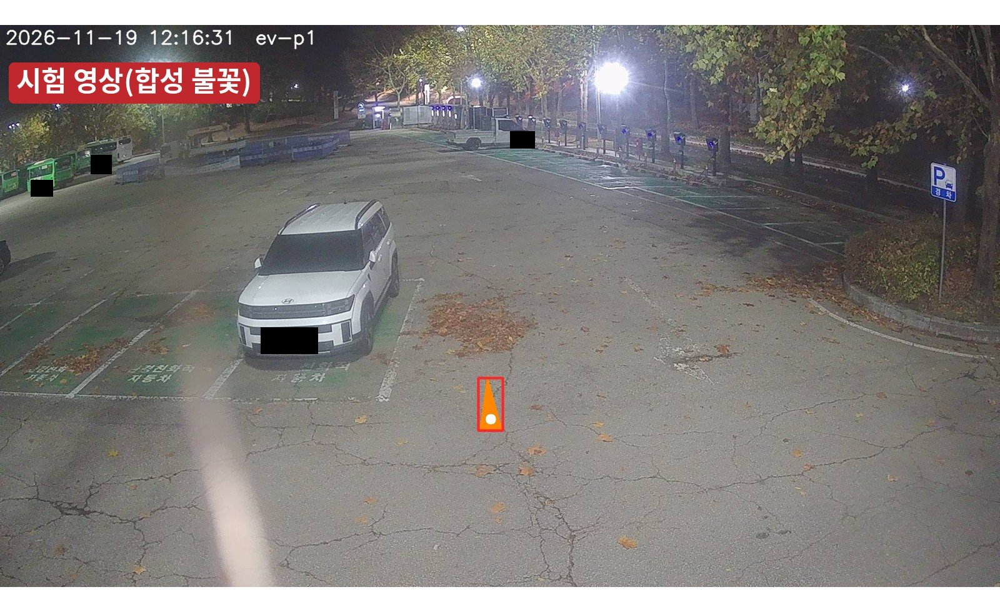
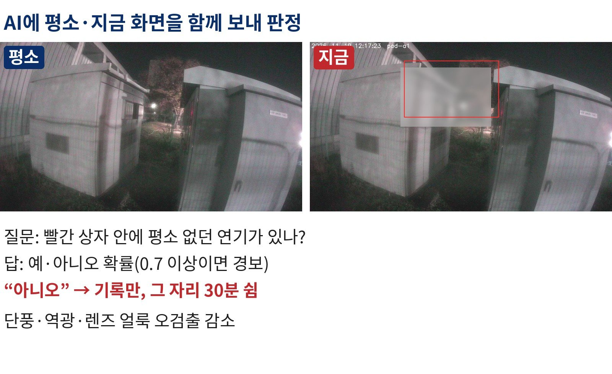

인프라 · 전기
옥내외 전기시설 감시 프로그램 구축
녹화만 하던 전기시설 CCTV 18대에 화재·연기·침수·영상 이상·침입 감지를 적용한 전기시설 전용 감시 프로그램을 구축했습니다. 영상 규칙으로 먼저 검출한 뒤 로컬 AI가 평소 화면과 지금 화면을 비교해 한 번 더 확인하며, CCTV 영상은 외부로 나가지 않습니다.
- 18대전기시설 CCTV 전체 연결
- 5종화재·연기·침수·영상 이상·침입
- 86건공통 엔진 자동 시험 통과
- 2,059만 원SW개발비 절감(부가세 포함)




- 경비·횃불 감시 기술을 전기시설로 확대
- 6월 중앙공급실 경비 감시, 10월 평화의 광장 감시를 자체 개발하며 확보한 영상 수신·검출·경보 기술을 공통 엔진(CctvMonitor v2.3)으로 묶어 전기시설에 적용했습니다. 세 감시 프로그램이 같은 엔진을 씁니다.
- 화재·연기 감지
- 불꽃 색이나 배경보다 밝은 점이 같은 자리에서 깜박이는지, 화면 윤곽이 흐려지는지로 1차 검출합니다. 실외 카메라 11대에는 햇빛과 흔들리는 나뭇잎을 빼는 기준을 따로 적용합니다.
- 침수 감지
- 바닥 구역이 마른 바닥보다 매끈해진 상태가 5분 이어지면 AI가 1분 간격으로 두 번 확인합니다.
- 영상 이상·침입 감지
- 화면 가림·조명 꺼짐이 30초 이어지면 기록하고 카메라 장애를 표시합니다. 18시부터 08시까지는 금지구역 침입에 경보를 울립니다.
- AI 2차 확인과 오경보 관리
- 평소 화면과 지금 화면을 나란히 AI에 보내 평소에 없던 불꽃·연기·물이 있는지 판정합니다. AI가 「아니오」라고 해도 기록은 남기고, 화재 30초·연기 120초 넘게 이어지면 경보를 울립니다.
- 현장 시험과 보완
- 보완 전 84분 시험에서 낮 시간 실외 카메라의 햇빛·나뭇잎 때문에 오경보 17건이 났고(실내 전기실 0건), 실외 기준을 따로 두는 등 보완한 뒤 14분 시험에서 경보 0건을 확인했습니다.
- 향후 계획
- 12월 18일까지 경보음 없이 기록만 하는 시범 운영으로 기준을 다듬고, 안전관리자 입회 모의 시험을 거쳐 경보로 전환합니다.